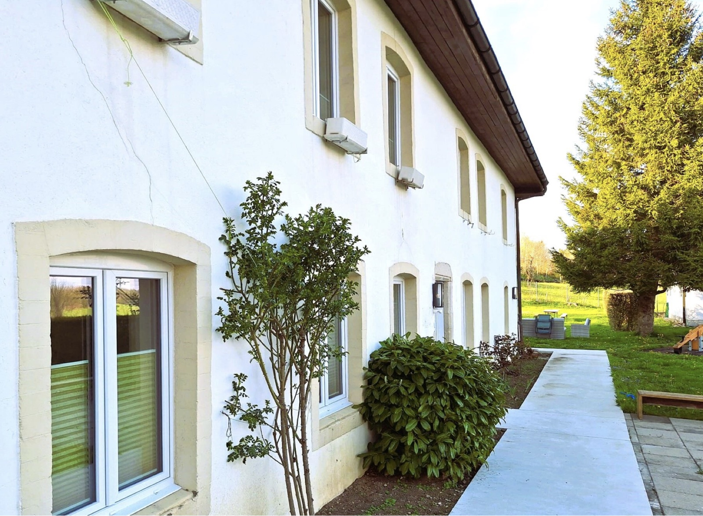
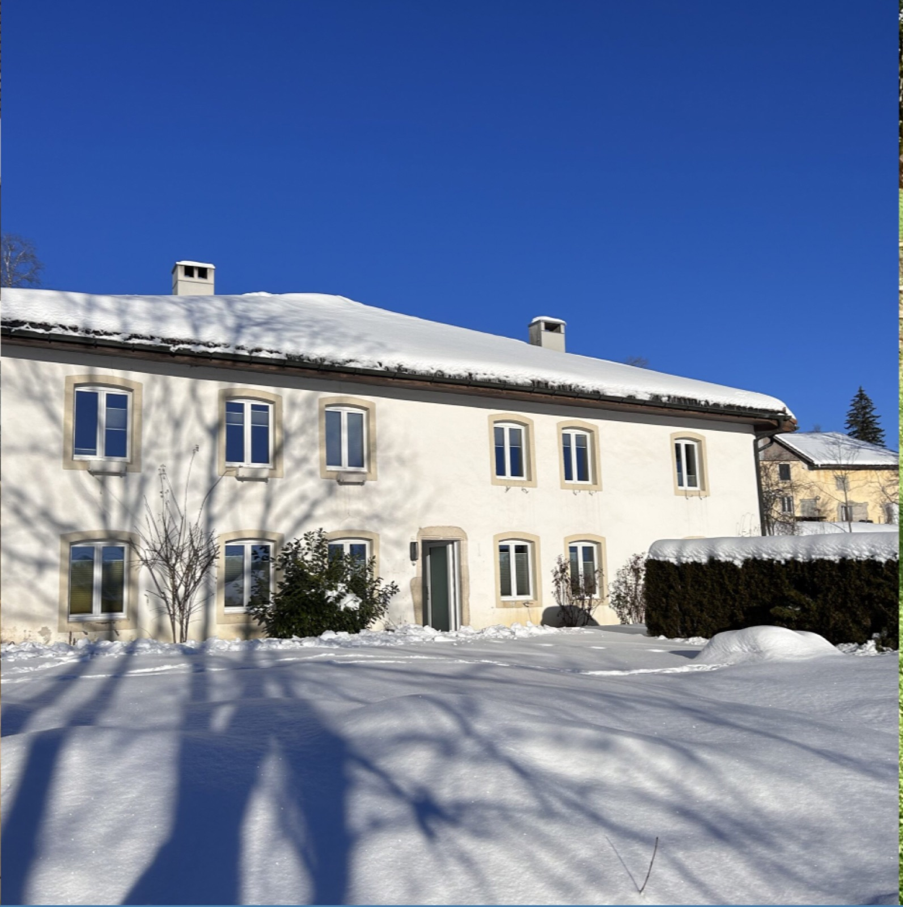
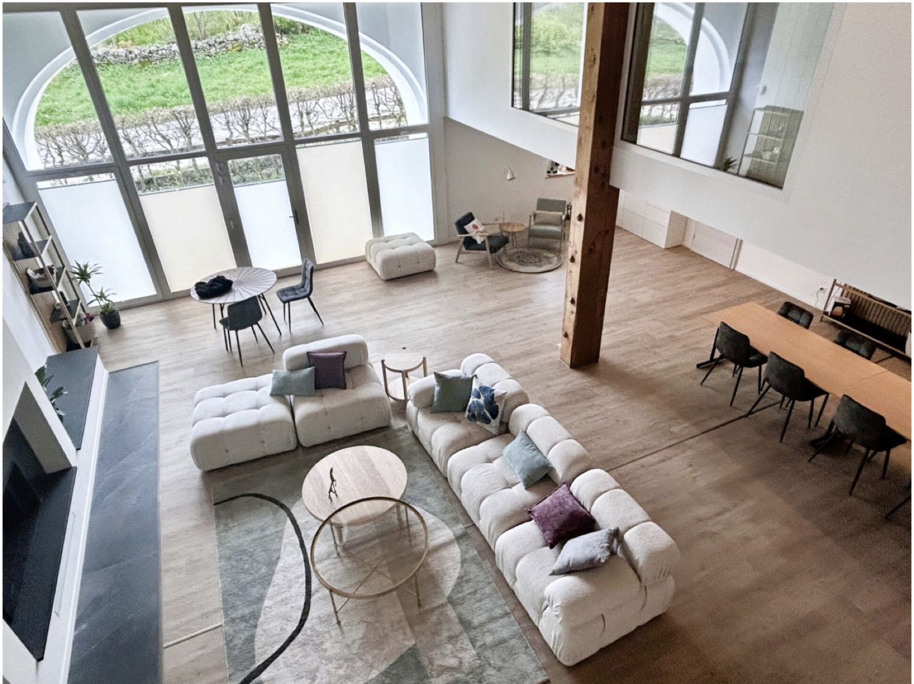
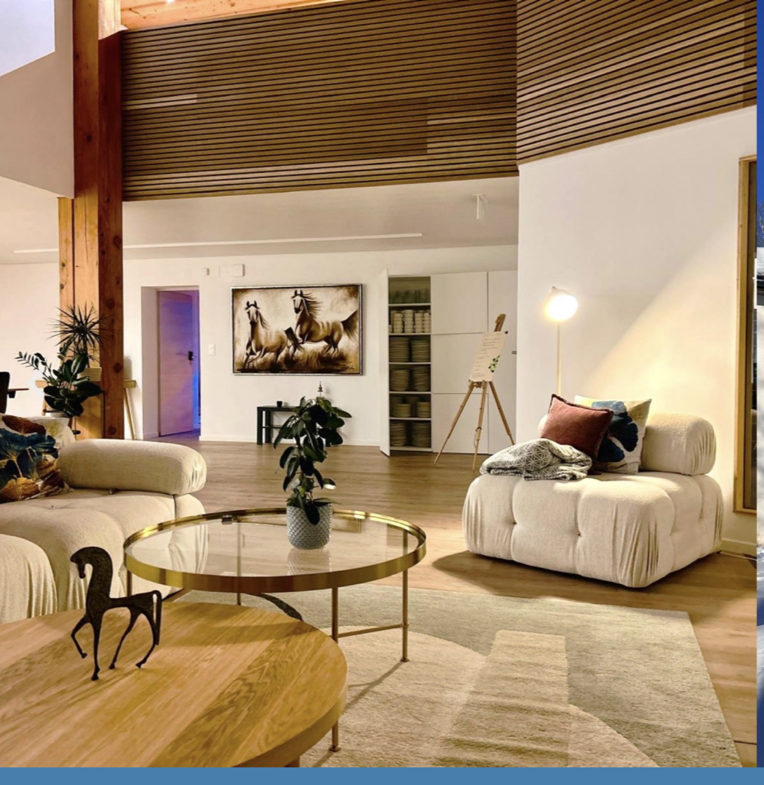
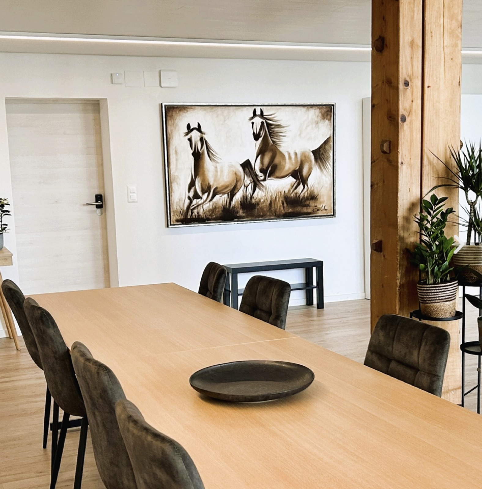
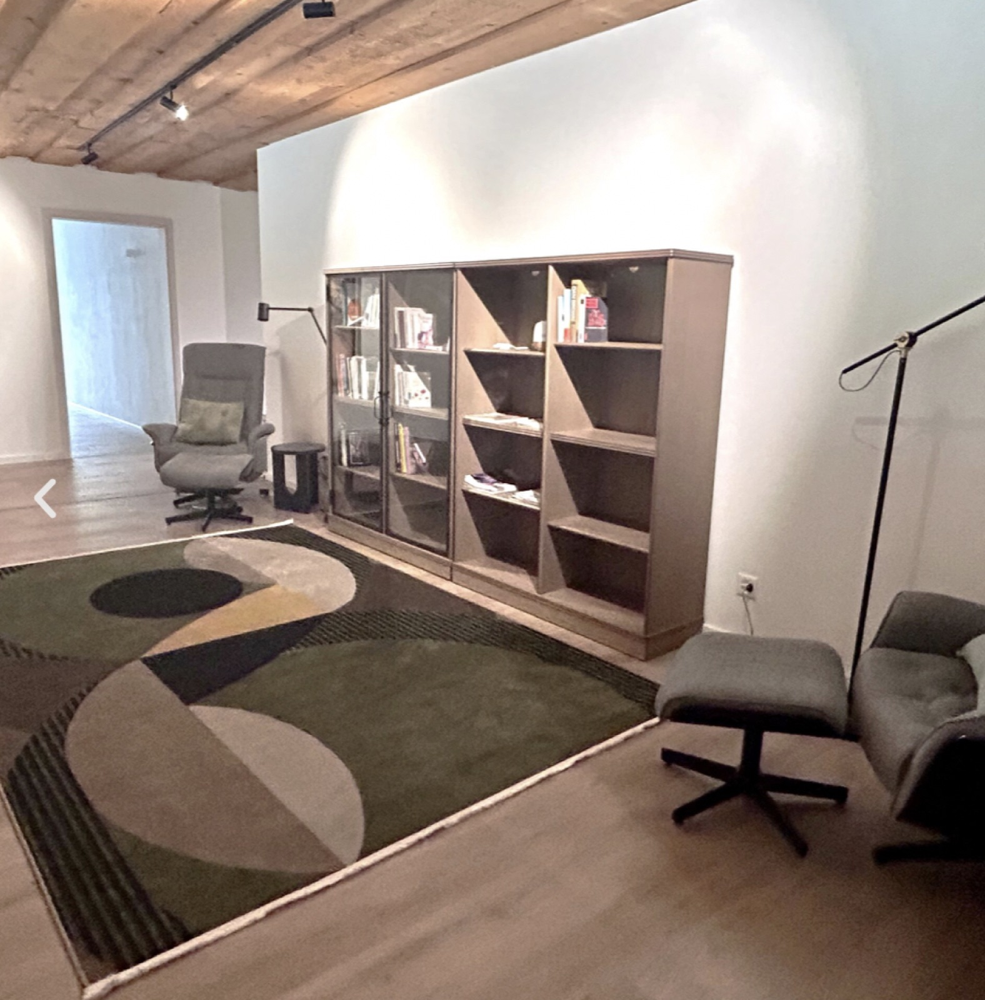
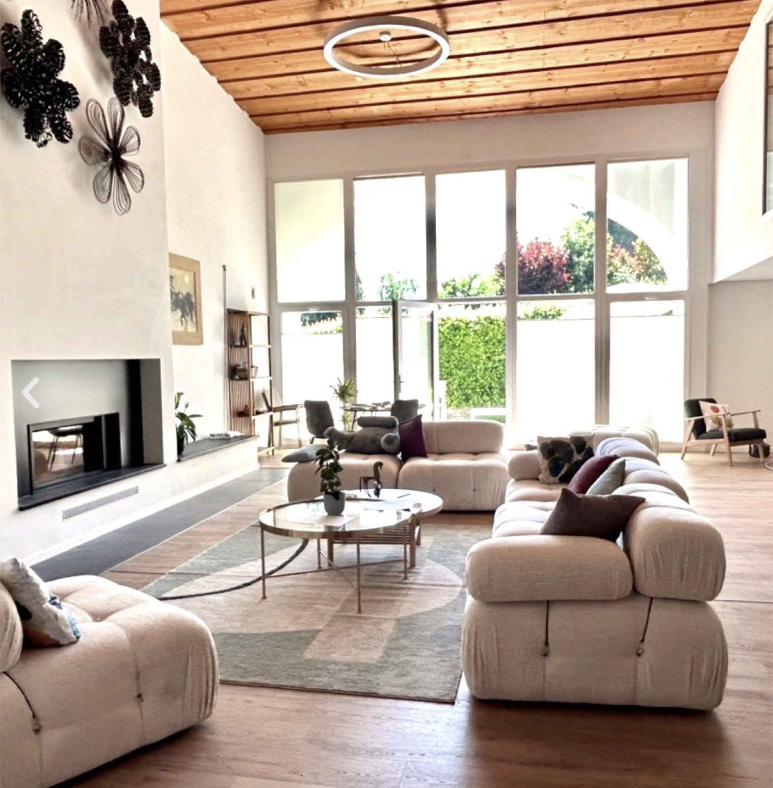
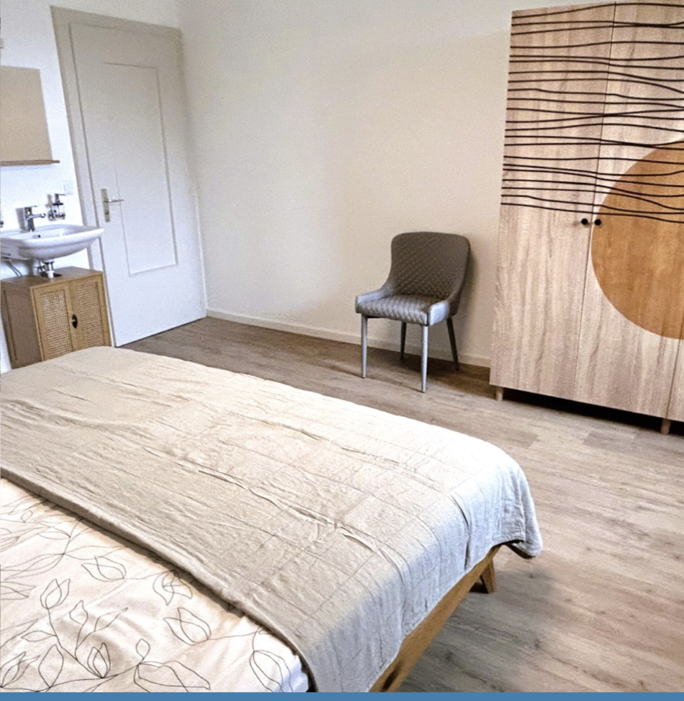
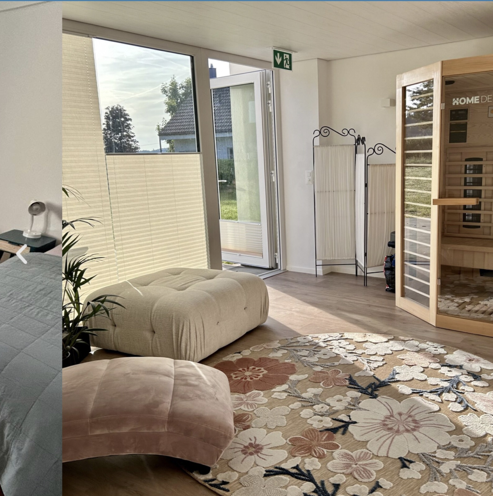
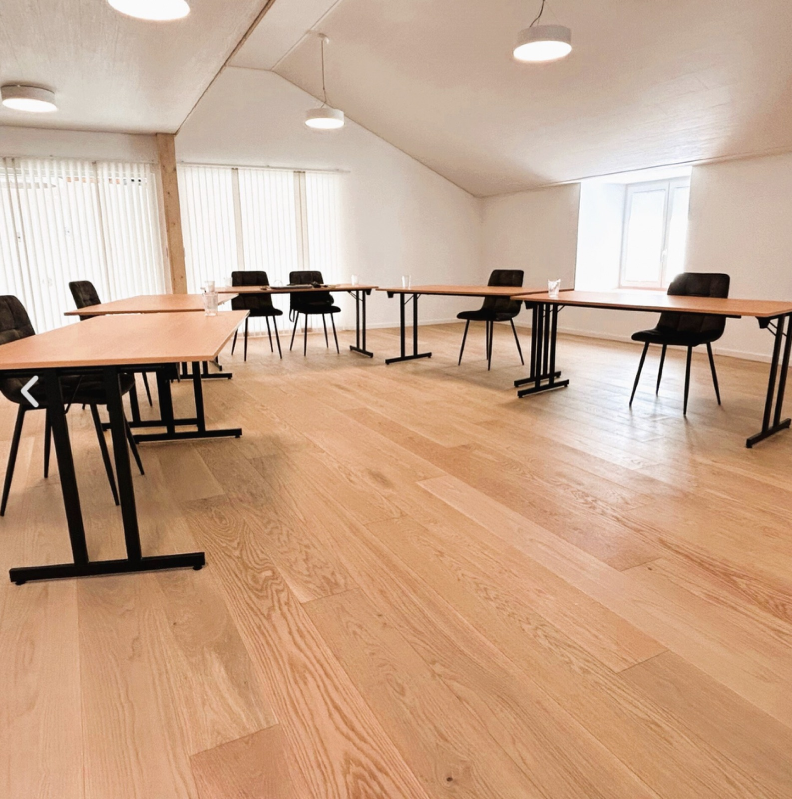

Accueil / Le lieu
Entre pâturages boisés et forêts de sapins, à plus de mille mètres d'altitude, dans les Franches-Montagnes.
Le canton du Jura, en Suisse romande, fait partie de la région touristique dite Jura et Trois-Lacs. Son territoire inclut une partie du parc régional du Doubs.
Non loin de la ville de Bâle, de Neuchâtel et de l'Alsace, à trois heures de Paris, il offre un paysage varié et fait le bonheur des amoureux de la nature : du plateau des Franches-Montagnes avec ses tourbières et ses étendues de sapins majestueux, aux plaines de l'Ajoie, en passant par la capitale Delémont et la cité médiévale de St-Ursanne.
Spacieuse et confortable maison, à proximité de la belle nature des Franches-Montagnes. Cette belle ferme jurassienne datant de 1700 s'est transformée en auberge dans les années 70. Après une rénovation complète en 2024, elle est maintenant un lieu d'accueil et d'hébergement pour les groupes.
Vous y trouverez deux grandes salles, plusieurs espaces communs, des chambres individuelles ou à deux (certaines avec salle de bains privative), des salles de soin, et un petit sauna infrarouge. Chaque jour, un vaste choix de massages vous est proposé.
À quelques minutes, le centre de loisirs des Franches-Montagnes, à Saignelégier, offre un grand bassin de nage et un espace wellness. Le train s'arrête au Bémont, à deux pas de la maison.
Grandes pièces communes, chambres calmes et petits espaces de bien-être, dans une ferme jurassienne rénovée en 2024.









